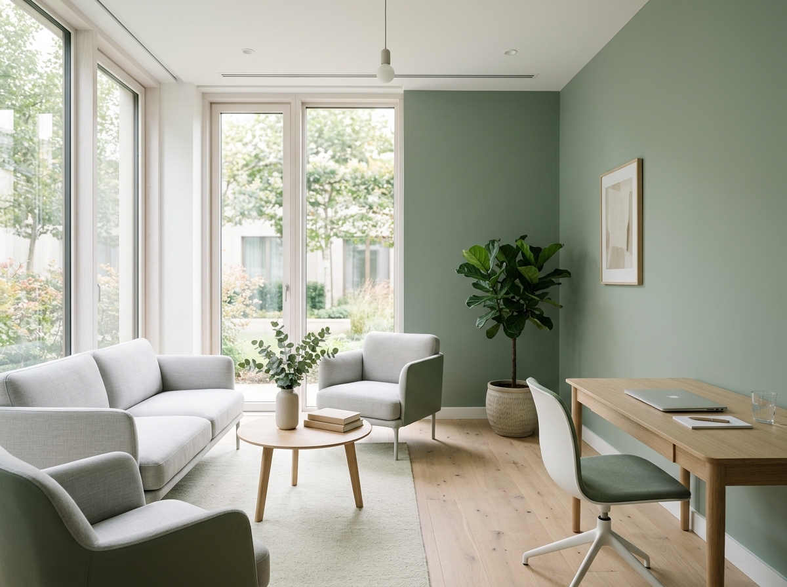

눈성형
쌍꺼풀, 눈매교정, 트임수술 등 눈 전체 균형을 고려한 디자인을 제공합니다.
상담 문의 →병원 소개
쿠마성형외과는 "수술 전 충분한 설명, 수술 후 책임 있는 관리"를 원칙으로 운영합니다. 모든 상담은 전문의가 직접 진행하며, 부위별 예상 결과와 회복 기간, 비용을 사전에 명확히 안내합니다.
마케팅 문구가 아닌 실제 임상 데이터와 케이스를 기반으로 상담을 진행하며, 불필요한 수술을 권유하지 않습니다.

의료진 소개
"수술은 결과로 말합니다. 과장된 광고보다 환자분이 직접 비교하고 판단할 수 있는 정보를 드리는 것이 제 역할이라고 생각합니다."
자주 묻는 질문
쌍커풀 매몰법은 3~5일, 절개법은 1~2주 정도 붓기가 빠지며 자연스러운 라인은 약 1개월 후 확인할 수 있습니다. 개인차가 있으니 상담 시 정확한 안내를 드립니다.
코끝성형, 콧대성형, 재수술 여부에 따라 비용이 다르게 책정됩니다. 정확한 비용은 1:1 상담 후 견적서로 안내드리며, 추가 비용 없이 사전 고지된 금액만 청구됩니다.
네, 쿠마성형외과는 상담부터 수술, 경과 관찰까지 전문의가 직접 담당합니다. 상담실장이 아닌 의사와 직접 대화하며 결정하실 수 있습니다.
상담 문의
상담 내용은 외부에 공유되지 않으며, 전문의가 직접 회신드립니다.
전화 02-1234-5678
주소 서울 강남구 강남대로 123
진료시간 평일 10:00–19:00 / 토요일 10:00–15:00